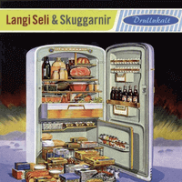

Langi Seli og Skuggarnir - Drullukalt (Album, 2009)
01 - Ryk Og Sól (3:14)
02 - Bíddu Eftir Mér (2:48)
03 - Haustið (3:18)
04 - Sörfað Í Sandvík (3:25)
05 - Á Góðum Degi (2:54)
06 - Drullukalt (3:05)
07 - Kveðja Sporðdrekans (3:53)
08 - Út Að Keyra (3:14)
09 - Nóttin Er Að Enda (3:08)
10 - Rigning Og Rok (3:04)
© Mix Records ehf :: [Digital]
Notes
Reykjavík, Iceland.
"Drullukalt" was published in 2009, my experience is based on Digital release of this album (2018)
The album art is designed by Icelandic artists Ragnar Kjartansson and Guðmundur Oddur Magnússon
reference information: Wikipedia®
Review
092/366 (Project 366)
Today is 01.04.2020. So, I decided to review something special.
Still consistent with the genre, quite rockin' and rollin', even Rockabilly, but many noteworthy particularities! The songs are performed in Icelandic, stylistically modern and with the addition of rather glamorous effects (like a DJ scratching and other ultra modern spices for the Rockabilly sound). Perhaps, powerful gloss of Modern Rockabilly with a rockin' Pop base. Keep rollin'.
However, the band formed in 1988 and their debut album "Rottur Og Kettir" dates from 1990. Being quite active and popular in the late 1980s and early 1990s, they still operate after a timebreak. Their original sound was always around Rock'n'Roll, Rockabilly and modern experiments. So, the reviewed album reflects some side of the band, but is not very revealing in the context of all their creativity and discography (where was even some old school Psychobilly tones).
The album begins with a sound quite characteristic of the band, "Ryk Og Sól" is a little crazy, somewhat boogie with twist and rollin' feelings. Bass walking is so baggy, moony mood with an eclectic instrumental tone and surprising scratching. Full of positive attitude. The second track "Bíddu Eftir Mér" is a bit more spicy and still with DJ scratching sound effects. Feelings of rockin' midnight beat! A little hasty, accelerating the pace and step... the melody glows. Such a remarkable way of singing and performing. Rather a catchy point! Third track "Haustið" is a bit of a ballad thing, with a completely sloppy bass, strollin' voice, straight drums, guitars and main lovely chorus solo. An interesting composition with fully experimental end of the track. The next song "Sörfað Í Sandvík" is absolutely Surfin' theme. Well, slightly garage, something surf-a-delic and adventuresome, maybe even space around! Quite fancy and even stylistically interesting Surf song. And again with these extraordinary sound effects of scratching and DJing. Almost instrumental composition with the beauty of backing voices melody. Rockabilly strikes back with thoroughgoing rhythm in the fifth track "Á Góðum Degi". Maybe eighties shade of Teds and Rockers?! But still with this cosmoscratching, very bright element. The next song "Drullukalt" is pretty modern, however with a touch of vintage. A lot of backing effects from radio, sirens, voices, vocals, out of tune breaks and rockin' boogie motions. Quite psycho garage beginning of the seventh track "Kveðja Sporðdrekans" leads to yet another Surf composition. Instrumental with a slightly horror tinge. Most likely close to crime outlaw story, pretty picturesque and has an exciting motive. All modern sound effects make the sensations just oversensed by a blend of completely different forms and shapes. With the next song "Út Að Keyra", shining is back with rollin', strollin' and hop! Twistin' and rockin'. So atmospheric Rock'n'Roll. It sounds vintage but all the ultra-neo effects and dub layers make it a little groovy with futuristic tone and old time light. Ninth song "Nóttin Er Að Enda" is something that mostly was not with (neo)Rockabilly but it so suitable for that! Not a new wave, but fully inspired by experiments and traditional Rockabilly of revival times. Fantastic tune! Very smooth harmonious of melody and heavy load! Fancy waves and ways to perform are swinging within all track timeline. The tenth track "Rigning Og Rok" is absolutely unexpected end of the album even when you heard all these surprisingly wonder arrangements. Urban modernistic and rather nervous breakdown with full unification of used patterns. DJs, Rockers, Teds, Psychos.... well that was a conceptual ultraneo futuristic Modern Rockabilly Roll! Maybe with Dance pop powder.
Pretty exclusive sound of the album, but more interesting that it was the case even in 1990s - when they perform in the relative manner. Then, I can to suspect that "scratches" and related sound effects are comparable with Steel guitar and other rustic and classic instruments. But this is ultra neo modern one variation of Steel guitar entourage. An excellent idea and step if it is so.
Everything is as if mixed classic with modern, and at the same time quite cosmic. Maybe even unintendedly futuristic. Also I like how bass is recorded, it sounds maybe not perfect, but very lovely and catchy for this kind of songs. Another bright point are vocals. Lead and backing. So greatly sounding and is especially welcomed with Icelandic. It is a pleasure to listen.